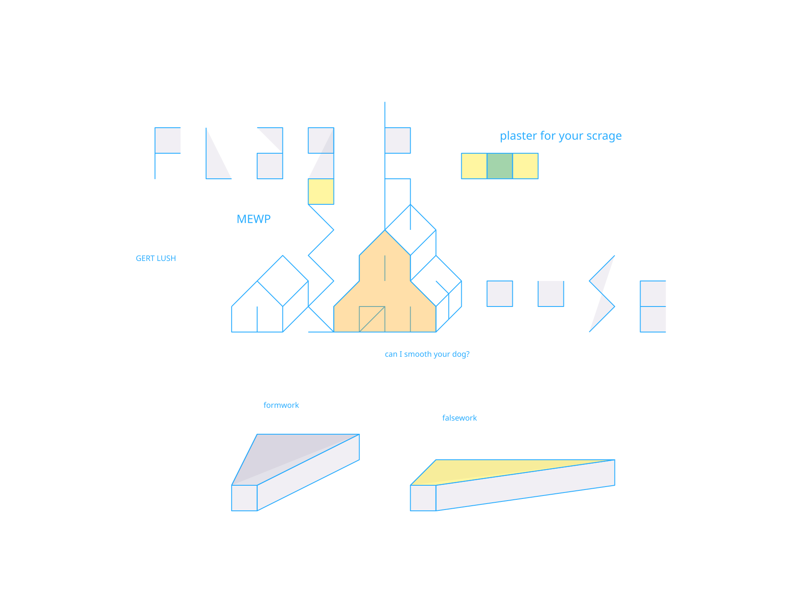

Featured
Real-time Sketch
Exploring line, form, and expression through a live process of drawing and visual storytelling.
Welcome! Here are my live drawings, sketches, and digital art pieces created in real-time.

Featured
Exploring line, form, and expression through a live process of drawing and visual storytelling.
Study
A focused exploration of rhythm, contrast, and gestural marks in a minimal and expressive style.
Character
Loose form studies and visual ideas shaped around personality, silhouette, and mood.